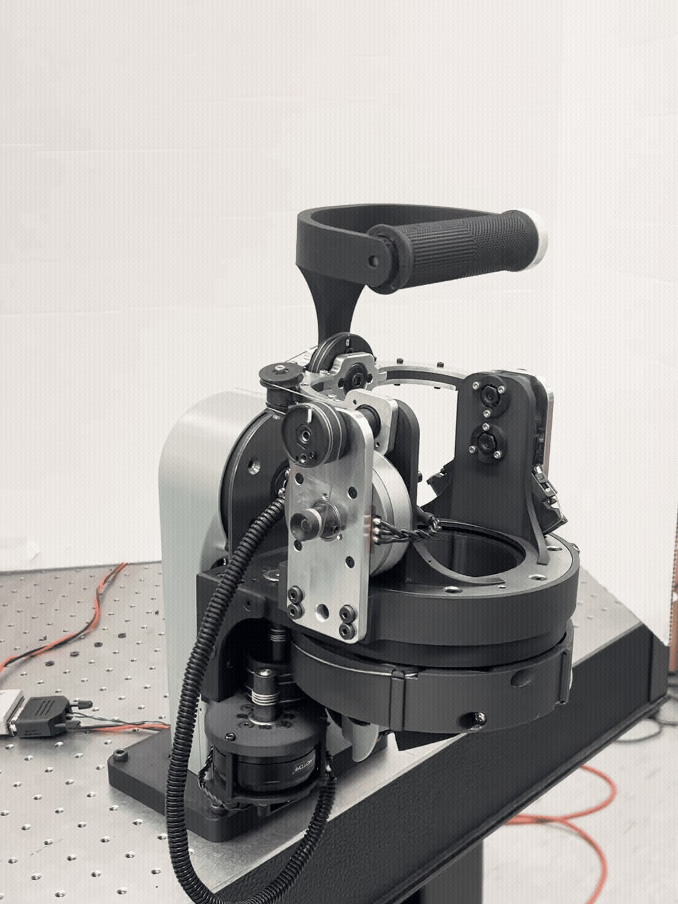
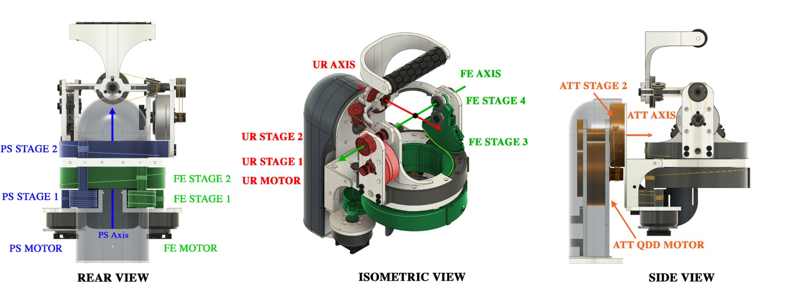
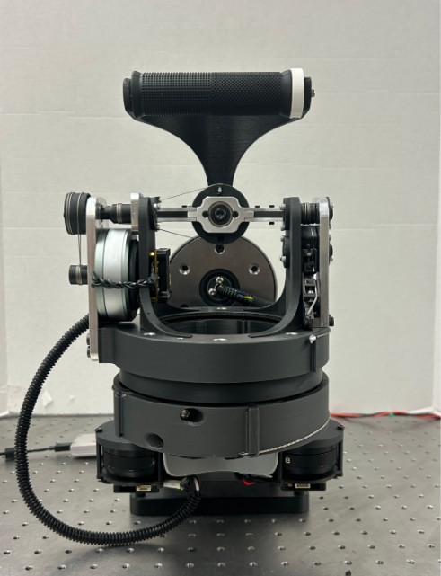
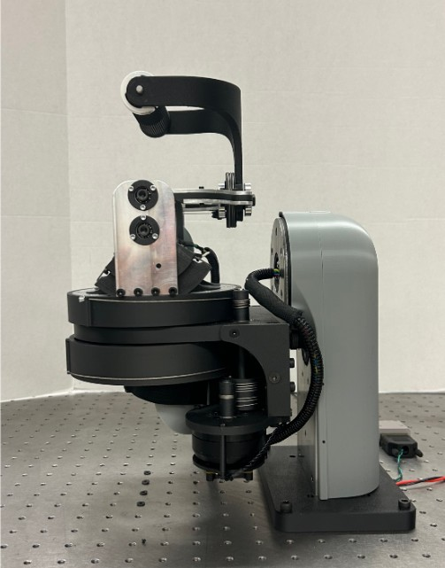
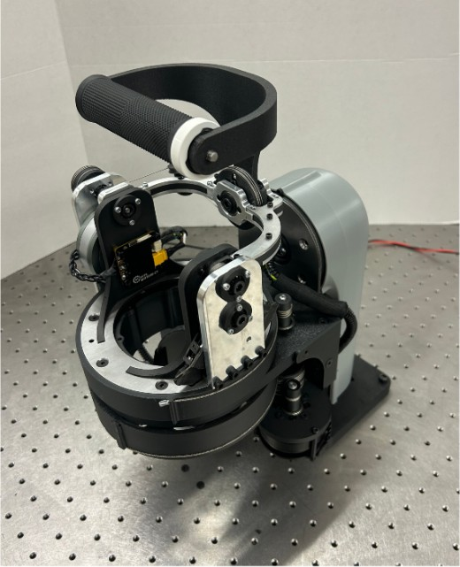
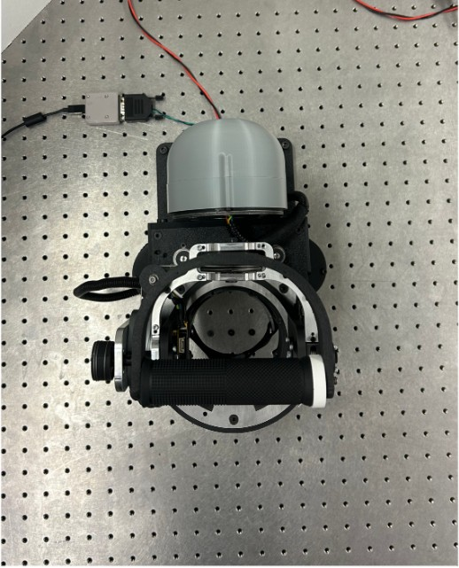
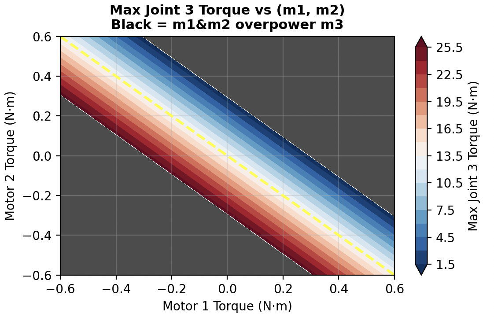
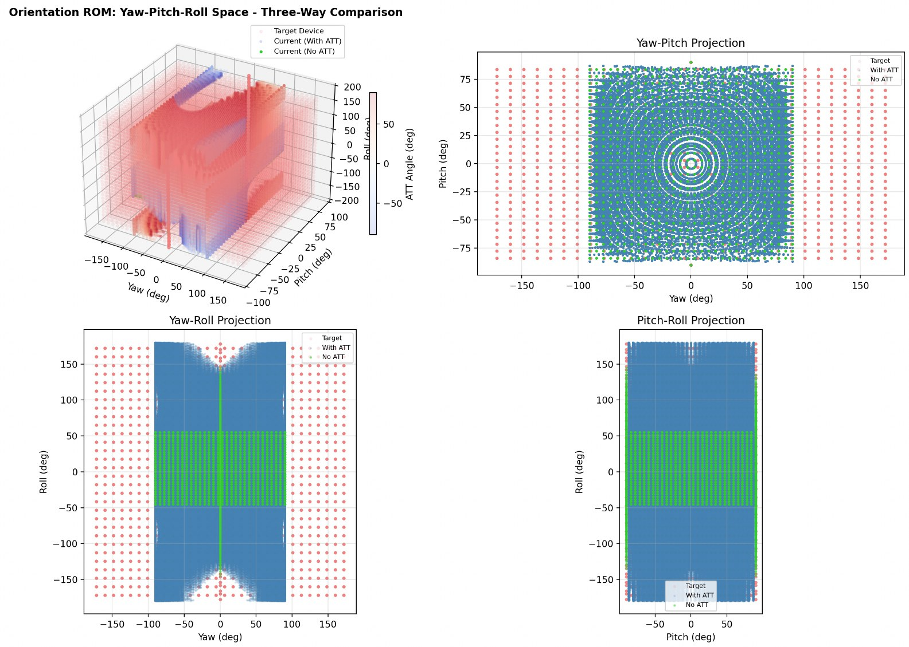

The coaxial semi-differential wrist

This wrist goes on the end of a Barrett WAM. The operator straps their forearm into the cuff and holds the handle, and the WAM and the wrist together act as the leader for a second WAM. It came after the spherical wrist and before the final version from my time at Barrett.
It has four joints. Three follow the human wrist: pronation–supination (PS), flexion–extension (FE) and radial–ulnar deviation (RU). The fourth, which I called ATT for active attachment, sits between the wrist and its mount and turns the whole thing, cuff included. Every joint is cable driven, and the whole device weighs 4.9 kg.
How the cables run


The PS and FE motors both sit at the bottom of the wrist. Each drives a small first stage, and each second stage is a large ring centred on the PS axis, with the PS ring stacked on top of the FE ring. The forearm passes up through the middle of both rings, so the PS axis runs along the forearm.
PS ends there, with an overall reduction of 34.3:1. FE has two more stages. Stage 3 is an arc that carries the drive up the side of the gimbal, and stage 4 sits on the FE axis. Its overall reduction is 12.3:1. RU has its own motor and two stages, with a 7.6:1 reduction. The ATT joint is driven by a quasi-direct-drive motor through a large pulley on the mount.
The PS and FE motors are T-Motor GB54-2 gimbal motors, the RU motor is a CubeMars GL60, and the motors run on mjbots moteus controllers.








Driving each motor
Each clip has one motor driving the wrist. Motors 1, 2 and 3 are the PS, FE and RU motors.
Torque at each joint
The transmission maps the three wrist motor torques to joint torques like this:
\[ \begin{bmatrix} \tau_{\text{PS}} \\ \tau_{\text{FE}} \\ \tau_{\text{RU}} \end{bmatrix} = \begin{bmatrix} 34.3 & 0 & 0 \\ 12.3 & 12.3 & 0 \\ -44 & -44 & 7.6 \end{bmatrix} \begin{bmatrix} \tau_{m1} \\ \tau_{m2} \\ \tau_{m3} \end{bmatrix} \]PS only sees motor 1. FE sees the sum of motors 1 and 2, so any torque motor 1 puts on PS also lands on FE, and motor 2 has to cancel it if FE is supposed to stay still.
I measured 0.45 N·m continuous and 0.60 N·m peak from each GB54-2, and 0.60 N·m continuous and 1.75 N·m peak from the GL60. Pushing the peak values through the matrix, one joint at a time:
\[ \begin{aligned} \tau_{\text{PS}} &= 34.3 \times 0.60 = 20.6\ \mathrm{N{\cdot}m} \\ \tau_{\text{FE}} &= 12.3 \times (0.60 + 0.60) = 14.8\ \mathrm{N{\cdot}m} \\ \tau_{\text{RU}} &= 7.6 \times 1.75 = 13.3\ \mathrm{N{\cdot}m} \end{aligned} \]The continuous values give 15.4, 11.1 and 4.56 N·m the same way. The RU numbers count motor 3 alone.
The bottom row is the trouble. Each newton-metre from motor 1 or motor 2 puts 44 N·m on RU with the opposite sign, almost six times what motor 3 gets through its own 7.6:1 drive. With motor 3 at its 1.75 N·m peak, motors 1 and 2 cancel all of it once
\[ |\tau_{m1} + \tau_{m2}| = \frac{7.6 \times 1.75}{44} \approx 0.30\ \mathrm{N{\cdot}m}, \]which is half the peak of one GB54-2.


| Mass | 4.9 kg |
|---|---|
| Range | ATT ±90°, PS ±90°, FE ±90°, RU −45° to +55° |
| Peak torque | ATT 80, PS 20.6, FE 14.8, RU 13.3 N·m (estimated, under 1 s) |
| Continuous torque | ATT 16.5, PS 15.4, FE 11.1, RU 4.56 N·m (estimated) |
| Reductions | PS 34.3:1, FE 12.3:1, RU 7.6:1 |
| PS and FE motors | T-Motor GB54-2: Kv ≈ 26 rpm/V, Kt ≈ 0.367 N·m/A, about 15 Ω phase resistance |
| RU motor | CubeMars GL60: Kv ≈ 21.5 rpm/V, Kt ≈ 0.45 N·m/A, about 5.5 Ω |
| ATT motor | Quasi-direct drive |
| Controllers | mjbots moteus |
The range covers a typical human wrist: PS ±85°, FE ±80° and RU −25° to +50°, from Pitzalis et al. For comparison, the WAM’s own wrist (joints 5 to 7) turns ±172°, ±90° and ±172°, with peak torques of 34.6, 34.6 and 9.16 N·m and continuous torques of 6.75, 6.75 and 1.36 N·m.
Why the ATT joint is there
A human wrist covers a small part of what the WAM’s wrist can do. I mapped both in yaw, pitch and roll. Without the ATT joint, the leader reaches 20.3% of the WAM wrist’s orientations. With it, the leader reaches 43.3%.


The ATT joint mostly deals with misalignment between my arm and the WAM. With it active I have to move my body around much less, and it’s a lot less tiring to use. It also lets the leader make better use of the follower’s wrist. The follower can twist its end effector purely about joint 7, and a human wrist can only make that pure twist when the hand is in line with the forearm. Without fingers, that single-axis twist is what you need for threading tasks.
It has costs. It makes both the mechanism and the control more complex, and it makes it harder to see by eye that the leader and the follower are in the same pose. It’s also part of the orientation control loop. We weight its share of the commanded torque so it doesn’t render much of the correction force on the leader, but it’s fair to ask why it’s in that loop at all.
On the WAM
What broke on the first build
The first build had five mechanical problems that I fixed:
- Cable sliding off stage 1 on PS and FE. The cable could slide off the ends of the pulley. I gave those stages a larger range so the mechanism never moves out to the ends, and added dowel pins about 0.5% of a revolution in from each end to keep the cable aligned and stop it slipping. The WAM’s wrist does the same thing.
- Tensioning FE stage 4. There’s very little room there, so the tensioner had little travel, and under higher tension the crimps would get ripped off during use. Laser-cut parts, e-clips and wrapping the cable around made it more reliable and gave it more travel. I also switched to a loop and a double wrap, like joint 1 of the WAM.
- Bolts backing out of the RU stage 1 pulley. I didn’t have the right hardware when I first built it and tried Loctite as a stopgap. That didn’t hold, so I replaced it with an aluminum bolt.
- Motor controller mounts on PS and FE. The controllers sat outside the working magnet gap for the encoder, which is 1.5 to 2.5 mm with 2 mm best, and the mount wasn’t very stable. Both made the position reading noisier and less accurate, which hurt the field-oriented control. A thicker, stiffer mount fixed both, with the gap at 2 mm.
- Cable creep on RU stage 2. That cable is about 1 m long and stretched at least 10 mm with use, about 1%. The small tensioner couldn’t take that up until I gave it more travel.
Other problems come from the kinematics themselves. Moving FE tends to move PS as well, so the handle doesn’t always go where the user is pushing it. Related to that, the motors can work against each other, and when you backdrive the wrist you have to hold a counter-torque to stop motion you didn’t ask for. FE stage 4 also has an “increaser” in it that doesn’t make sense in a device like this. Getting rid of it would take some rearranging of the parts.
Control
We started with a non-zero kd in the moteus drives’ own PID loop. Even in torque mode, each drive was applying a hidden inner derivative term, −kd·ω, on top of our outer PD controllers. I think that extra term amplified velocity noise and made the system unstable. Setting kd to 0 removed it.
The orientation controller’s gains were very sensitive. I had to run very low gains on the leader, which limited how much force feedback it could give.
A few changes on the moteus side:
- I replaced the fdcanusb adapter with a PEAK PCAN-PCI Express FD card. The fdcanusb runs at USB 2.0 full speed, 12 Mbit/s with 1 ms frame scheduling, and shows up as a serial device, so every CAN frame goes through the kernel’s USB and TTY layers. The PEAK card sits on PCIe with a native kernel driver and direct CAN frame queues.
- I raised
--cal-bw-hzfrom the default 200 Hz to 800 Hz, which stiffens the current loop so torque can change faster. - I updated to moteus firmware with the new hall-sensor pipeline. It times transitions at very low speed and uses a PLL at higher speed, and the velocity estimate is much less spiky. Our control loops saw far less derivative noise after that.
Using it
Range is still the biggest limit. Without your fingers, most tasks are awkward. The ATT joint’s extra range does make tabletop tasks possible with the elbow down, which the three-joint wrists couldn’t do, but more range on the leader would make it much more usable.
I’m also not sure force feedback on all three anatomical joints helps. It feels a bit awkward, and PS motion often makes the arm slip in the cuff, which throws the user out of line with the WAM. For most tasks, feedback on PS seems less important than on FE and RU, so a later version could drop it there.
The elbow is the other open problem. Ideally the plane through my upper arm and forearm matches the plane through the WAM’s upper arm and forearm. In gravity mode that’s easy to keep. In teleoperation the WAM’s higher apparent impedance damps the motion, and keeping the two planes together gets much harder. I end up adjusting the elbow with my other arm or moving my body to compensate.
Questions or comments? Email me at justin@justinvalentine.ca.